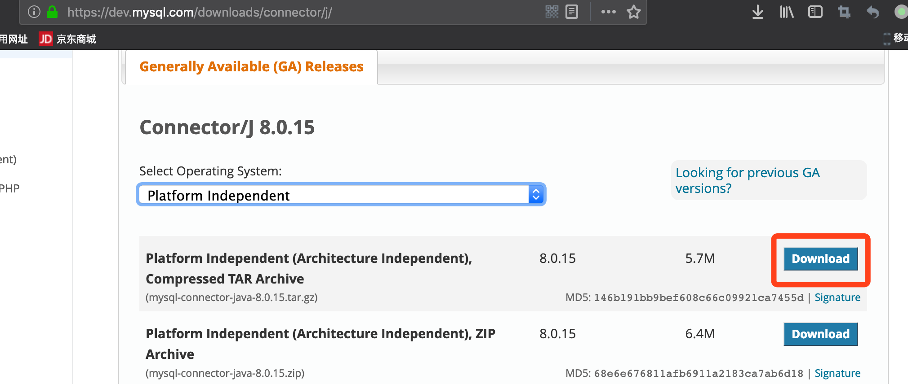
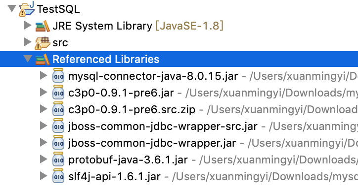

我们经常需要使用Java与SQL打交道,Java与SQL交互有很多类库,很多名词比如
- JDBC
- MyBatis
- JPA
- Hibernate
- Spring Data
- ...
我们将一一学习使用,理清楚他们之间的关系以及封装。
首先，我们选取一个数据库作为测试用例,这里先使用MySQL，如下。
创建一张测试user表
$ mysql -uroot -hlocalhost
Welcome to the MariaDB monitor. Commands end with ; or \g.
Your MariaDB connection id is 20
Server version: 10.2.22-MariaDB Homebrew
Copyright (c) 2000, 2018, Oracle, MariaDB Corporation Ab and others.
Type 'help;' or '\h' for help. Type '\c' to clear the current input statement.
MariaDB [(none)]> use test
Database changed
MariaDB [test]> create table user(username varchar(32), password varchar(32), sex tinyint(1));
Query OK, 0 rows affected (0.01 sec)
MariaDB [test]> desc user;
+----------+-------------+------+-----+---------+-------+
| Field | Type | Null | Key | Default | Extra |
+----------+-------------+------+-----+---------+-------+
| username | varchar(32) | YES | | NULL | |
| password | varchar(32) | YES | | NULL | |
| sex | tinyint(1) | YES | | NULL | |
+----------+-------------+------+-----+---------+-------+
3 rows in set (0.01 sec)
MariaDB [test]>
环境设置
下载MySQL的JDBC包

加入项目依赖

连接
数据库使用之前先需要先连接数据库，获得数据库连接的conn
// 数据库连接URI
String driverName = "com.mysql.cj.jdbc.Driver";
String url = "jdbc:mysql://localhost:3306/test";
String user = "root";
String password = "";
Connection conn = null;
try {
// 加载驱动
Class.forName(driverName);
// 获取连接
conn = DriverManager.getConnection(url, user, password);
System.out.println("连接成功");
} catch (ClassNotFoundException e){
e.printStackTrace();
} catch (SQLException e) {
e.printStackTrace();
}
操作
增
插入一条数据
String sql = "insert into user (username, password, sex) values(?, ?, ?)";
PreparedStatement pstmt;
try {
pstmt = (PreparedStatement) conn.prepareStatement(sql);
pstmt.setString(1, "xuanmingyi");
pstmt.setString(2, "iygnimnaux");
pstmt.setInt(3, 0);
pstmt.executeUpdate();
pstmt.close();
conn.close();
} catch (SQLException e) {
// TODO Auto-generated catch block
e.printStackTrace();
}
PreparedStatement实例包含了已经编译的SQL语句,setXxxx方法来设置参数，然后执行executeUpdate来执行插入方法。
让我们来看看结果
MariaDB [test]> select * from user;
+------------+------------+------+
| username | password | sex |
+------------+------------+------+
| xuanmingyi | iygnimnaux | 0 |
+------------+------------+------+
1 row in set (0.00 sec)
删
删除一条记录
String sql = "delete from user where username=?";
PreparedStatement pstmt;
try {
pstmt = (PreparedStatement) conn.prepareStatement(sql);
pstmt.setString(1, "xuanmingyi");
pstmt.executeUpdate();
pstmt.close();
conn.close();
} catch (SQLException e) {
// TODO Auto-generated catch block
e.printStackTrace();
}
删除数据
MariaDB [test]> select * from user;
Empty set (0.00 sec)
改
修改一条记录,先插入一条数据
MariaDB [test]> select * from user;
+------------+------------+------+
| username | password | sex |
+------------+------------+------+
| xuanmingyi | iygnimnaux | 0 |
+------------+------------+------+
1 row in set (0.00 sec)
使用如下代码修改password
String sql = "update user set password=? where username= ?";
PreparedStatement pstmt;
try {
pstmt = (PreparedStatement) conn.prepareStatement(sql);
pstmt.setString(1, "123456");
pstmt.setString(2, "xuanmingyi");
pstmt.executeUpdate();
pstmt.close();
conn.close();
} catch (SQLException e) {
e.printStackTrace();
}
使用update语句修改数据,就是这么简单
MariaDB [test]> select * from user;
+------------+----------+------+
| username | password | sex |
+------------+----------+------+
| xuanmingyi | 123456 | 0 |
+------------+----------+------+
1 row in set (0.00 sec)
查
查找记录
String sql = "select * from user";
PreparedStatement pstmt;
try {
pstmt = (PreparedStatement)conn.prepareStatement(sql);
ResultSet rs = pstmt.executeQuery();
int col = rs.getMetaData().getColumnCount();
while (rs.next()) {
for (int i = 1; i <= col; i++) {
System.out.print(rs.getString(i) + "\t");
}
System.out.println("");
}
} catch (SQLException e) {
e.printStackTrace();
}
返回值是ResultSet的实例，rs是一个迭代器,通过next方法一行行获取数据，getString(x)方法来获取第x列的数据，和上面的setString对应起来。
连接池问题 TODO
上面的代码里,我们使用DriverManager.getConnection方法 获取一个数据库连接，当不使用的时候，需要close。如果不close，会造成泄漏.
for(int i = 0 ; i < 5 ; i++) {
DriverManager.getConnection(url, user, password);
}
Thread.sleep(10000);
查看数据库的连接
MariaDB [(none)]> show processlist;
+-----+-------------+-----------------+------+---------+------+--------------------------+------------------+----------+
| Id | User | Host | db | Command | Time | State | Info | Progress |
+-----+-------------+-----------------+------+---------+------+--------------------------+------------------+----------+
| 1 | system user | | NULL | Daemon | NULL | InnoDB purge coordinator | NULL | 0.000 |
| 2 | system user | | NULL | Daemon | NULL | InnoDB purge worker | NULL | 0.000 |
| 3 | system user | | NULL | Daemon | NULL | InnoDB purge worker | NULL | 0.000 |
| 4 | system user | | NULL | Daemon | NULL | InnoDB purge worker | NULL | 0.000 |
| 5 | system user | | NULL | Daemon | NULL | InnoDB shutdown handler | NULL | 0.000 |
| 37 | root | localhost | NULL | Query | 0 | init | show processlist | 0.000 |
| 443 | root | localhost:54972 | test | Sleep | 8 | | NULL | 0.000 |
| 444 | root | localhost:54973 | test | Sleep | 8 | | NULL | 0.000 |
| 445 | root | localhost:54974 | test | Sleep | 8 | | NULL | 0.000 |
| 446 | root | localhost:54975 | test | Sleep | 8 | | NULL | 0.000 |
| 447 | root | localhost:54976 | test | Sleep | 8 | | NULL | 0.000 |
+-----+-------------+-----------------+------+---------+------+--------------------------+------------------+----------+
如上造成了5个数据库连接的泄漏。
如果我们每次不使用了就关闭，使用就连接，则会造成连接次数过多，消耗过多资源。
解决上面的办法就是: 维护一个连接池，用的话从池里面获取一个。这样即快速，不需要每次都打开连接，又不至于连接过多。
对象问题 DONE
使用JDBC的接口，可以从MySQL中获取到数据，但是在Java中，我们不是直接使用String数据，而是使用一个个对象，这个时候，光JDBC就不够用了，需要使用ORM的框架。